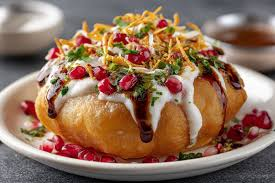
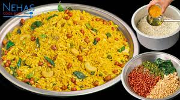
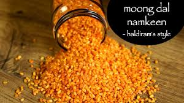

NAMAKIN DISH RECIPE
KACHORI RECIPE

Basic Kachori Recipe Steps
Prepare the Dough: Combine all-purpose flour, salt, and a generous amount of ghee or oil. Rub the fat into the flour until it resembles a breadcrumb texture, then knead with water into a semi-soft dough. The amount of fat (moyan) and the dough consistency are crucial for the signature crispy (khasta) texture. The dough is then covered with a damp cloth and allowed to rest.
Make the Filling: The filling involves soaking and grinding the moong dal into a coarse paste (if using dal). The ground dal or other primary ingredient is then sautéed with spices like cumin, fennel, coriander powder, chili powder, amchur (mango powder), and asafoetida (hing) until the mixture is dry and aromatic.
Assemble and Shape: Small portions of the dough are flattened, filled with the prepared stuffing mixture, sealed tightly, and gently shaped into a flat round patty or ball.
Deep Fry: The kachoris are deep-fried in oil over a low-to-medium heat. The temperature control is important; the oil should not be too hot initially to allow the kachoris to cook evenly and puff up. Frying continues until they are golden brown and crispy.
CHIVADA RECIPE

The preparation generally involves dry roasting or shallow frying the ingredients and then tossing them with a spiced oil tempering.
Roast the Poha: Gently dry roast the thin poha in a wide pan over a low flame until it becomes crisp. Remove and set aside.
Prepare Add-ins: In a little oil, fry the peanuts, cashews, roasted chana dal, and coconut slices until golden and crisp. Remove and set aside with the poha.
Make Tempering: In the same pan, heat a small amount of oil and add mustard seeds, cumin seeds, green chilies, curry leaves, and asafoetida. Sauté until the leaves and chilies are crisp.
Combine & Season: Turn off the heat and add turmeric powder, salt, and powdered sugar to the tempering. Immediately add all the roasted/fried ingredients (poha, nuts, etc.) and mix gently until everything is evenly coated.
Cool & Store: Allow the chivda to cool completely to room temperature before storing it in an airtight container to maintain its crunchiness.
MUGDAL RECIPE

Prep time: 4-5 hours (mostly for soaking and drying)
Cook time: ~10-15 minutes
Yields: Varies by quantity
Cuisine: Indian
Key Ingredients
Moong dal (split, skinned)
Oil (for frying)
Salt (to taste)
Seasoning options: Chaat masala, red chili powder, black salt, amchoor powder (dried mango powder)
Method Overview
Soak: Wash the moong dal and soak in water for a minimum of 4-5 hours to soften it.
Dry: Drain all the water and spread the dal on a clean kitchen towel for 30 minutes to an hour. Pat it dry completely to remove excess moisture; this is crucial for crispiness.
Fry/Bake:
Frying: Heat oil in a deep vessel. Fry the dal in batches using a net ladle until it turns light brown and crispy, stirring continuously.
Baking/Microwave: Alternatives include microwaving or baking with a little oil until crunchy.
Season: Drain the fried dal on a paper towel to remove excess oil. While it is still hot, immediately sprinkle with salt and your choice of spices (like chaat masala and chili powder) and mix well so the spices stick.
Store: Allow the namkeen to cool down completely before transferring it to an airtight container to maintain its crispness.